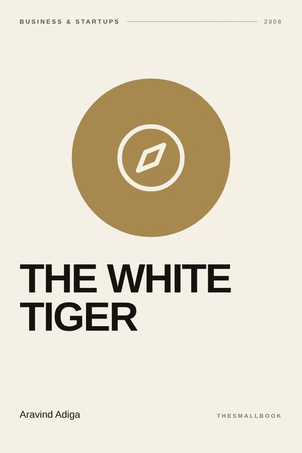

Library › Authors › Aravind Adiga
Books by Aravind Adiga
Aravind Adiga has one book in the library. Every book here is read down to the big idea, the lessons, the lines worth keeping and the actions worth taking. Start with the summary, then buy the full book if it earns a place on your shelf.

The White Tiger
2008 · 8 min · 6 lessons
Aravind Adiga's Booker-winning tale of a servant who escapes to become an entrepreneur - an unflinching look at the invisible cages of class and the cost of breaking them.
Adiga's Booker-winning novel is the story of Balram Halwai, a poor villager who escapes servitude to become an entrepreneur - by killing his master. Told as a confession, the book is a brutal examination of Indian entrepreneurship from below: the 'rooster coop' of caste and servitude, the cost of breaking out, and the uncomfortable truth that every system's winners include those who broke its rules. Balram is a villain and a hero simultaneously - and his story forces the reader to ask what 'success' really costs...
Lessons in the summary
- The Rooster Coop: The Trap You Don't See
- The Price of Escape: Breaking Rules Has a Cost
- The Entrepreneur From Below: Hunger as the Founder's Fuel
- Reading the Master: Understanding Power From Below
- The Darkness and the Light: Honesty About the System
- The Entrepreneur as Outsider: Building a New Identity
Lines worth keeping
- The rooster coop has no walls - because the prisoners never test them.
- Hunger is the founder's fuel that privilege can't manufacture.
- Reinvention is the entrepreneur's craft - build the identity the old system didn't permit.
Questions Aravind Adiga helps answer
Read nearby authors next
- Devdutt Pattanaik 5 books
- Rashmi Bansal 5 books
- Robin Sharma 5 books
- Chetan Bhagat 4 books
- Seth Godin 4 books
- Alex Hormozi 3 books
- Gurcharan Das 3 books
- Nir Eyal 3 books
Questions Aravind Adiga helps answer
Where should I start with Aravind Adiga? Start with The White Tiger: Aravind Adiga's Booker-winning tale of a servant who escapes to become an entrepreneur - an unflinching look at the invisible cages of class and the cost of breaking them.